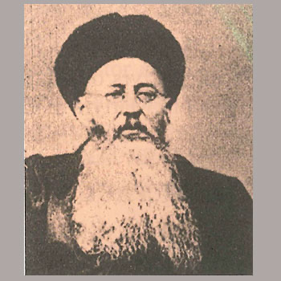

Istočnoazijski mučenici (6 svetaca)
Svećenik · Misionar · Mučenik
Sv. Léon-Ignace Mangin
Francuski isusovac služio je kao misionar u Kini i ostao uz kršćane tijekom Bokserskoga ustanka. Njegovo mučeništvo povezano je s Pavlom Dennom i pripada zajedničkom spomenu stotinu dvadeset kineskih mučenika.

Izvor slike
- Spomendan skupine
- 9. srpnja
- Zaštitništvo
- Nije navedeno u izvoru
- Djelovanje
- Misije i evangelizacija · Progoni i progonstvo · Mučeništvo
- Razdoblje
- 19. stoljeće
- Slavi se — zajednički izvor
- 9. srpnja · Neobvezni spomendan
- Liturgijski stupanj — zajednički izvor
- Neobvezni spomendan
Ovaj profil upućuje na zajednički izvor „Sveti Augustin Zhao Rong i drugovi, mučenici”. Slijedi životopis skupine ili zajednički prikaz mučeništva; zajednički podaci nisu svi osobni podaci ove osobe.
Zajednički životopis
Sveti Augustin Zhao Rong i drugovi, poznati i kao sveti mučenici Kine, skupina su od 120 ljudi ubijenih zbog kršćanske vjere u Kini između 1648. i 1930. Među njima je bilo 87 Kineza i 33 misionara rođena izvan Kine. Bili su biskupi, svećenici, redovnice i redovnici, ali i katehisti, obiteljski ljudi, radnici, trgovci, djeca i starci. Zajednički zapis ne opisuje jednu smrt ni jedan progon, nego gotovo tri stoljeća susreta vjere, kulture, politike i nasilja.
Najraniji član skupine jest dominikanac Francisco Fernández de Capillas. Rođen u Španjolskoj, djelovao je kao misionar u Fujianu. Tijekom mandžurskoga osvajanja područja zarobljen je, zatvoren i mučen. Dana 15. siječnja 1648. odrubljena mu je glava dok je s drugim zatočenicima molio. Njegova smrt označuje početak kronološkoga niza, ali ne i početak kršćanstva u Kini, koje je imalo stariju i složeniju povijest.
U 18. i 19. stoljeću odnos kineskih vlasti prema kršćanskim zajednicama mijenjao se između ograničene snošljivosti i zabrana. Vjera se katkad povezivala sa stranim utjecajem, osobito kada su misionari dolazili iz europskih zemalja čije su vlade pritiskale Kinu. Ipak, većina članova ove skupine bili su sami Kinezi. Njihovo svjedočanstvo ne može se svesti na priču o stranim misijama: oni su vjeru prihvatili kao vlastitu i prenosili je u obiteljima i mjesnim zajednicama.
Augustin Zhao Rong, po kojemu je skupina nazvana, rodio se 1746. Isprva je bio vojnik. Dok je pratio zatočenoga biskupa Gabriela-Taurina Dufressea, susret s njegovom postojanošću potaknuo ga je da upozna kršćanstvo. Krstio se, školovao i postao jedan od prvih kineskih dijecezanskih svećenika. Uhićen je tijekom novoga vala progona i umro 1815. od posljedica zlostavljanja u zatvoru. Njegov put od vojnika koji nadzire zatvorenika do svećenika koji dijeli sudbinu progonjenih daje skupini snažan unutarnji simbol.
U istom su stoljeću stradali i brojni drugi. Neki su misionari pogubljeni nakon dugih putovanja i skrivanja, a domaći svećenici i laici kažnjavani su zato što su im pružali smještaj, prenosili poruke ili odbijali zanijekati vjeru. Među mučenicima nisu svi umrli na isti način: jedni su pogubljeni, drugi su umrli u zatvoru od rana i mučenja. Zbog toga nije opravdano cijeloj skupini pripisivati jednu vrstu stradanja.
Najveći broj članova skupine stradao je tijekom Bokserskoga ustanka 1900. i 1901. Pokret poznat kao bokseri nastao je u ozračju siromaštva, prirodnih nepogoda, političke slabosti države i snažnoga otpora stranom utjecaju. Kršćani su često bili viđeni kao saveznici stranaca. Takva je predodžba bila pojačana nejednakim ugovorima koje su zapadne sile nametnule Kini te povlasticama i zaštitom koju su neke misije uživale.
Povijesni kontekst objašnjava nastanak neprijateljstva, ali ne opravdava ubojstva. Napadi nisu pogađali samo europske misionare, nego desetke tisuća kineskih kršćana. Među kanoniziranima su pripadnici različitih pokrajina i staleža. U Taiyuanu u Shanxiju 9. srpnja 1900. ubijeni su franjevački biskupi Gregorio Grassi i Francis Fogolla, svećenici Elias Facchini i Théodoric Balat te redovnički brat Andrew Bauer. S njima su stradali kineski redovnici, sjemeništarci i vjernici.
Skupina obuhvaća i žene čiji se glas lako izgubi u zbirnim brojkama. Redovnice i laikinje pružale su utočište, poučavale vjeru, skrbile za djecu i odbijale pogaziti ono što su ispovijedale. Marija Zhao i Marija Zhao Guoshi dvije su različite kineske laičke mučenice iz vremena Bokserskoga ustanka. Njihova pojedinačna imena pokazuju zašto se skup ne smije prikazivati samo kao pratnja Augustinu Zhao Rongu: naslov nosi njegovo ime, ali svetost i stradanje svakoga člana imaju jednaku vrijednost.
Među mučenicima su bila i djeca. Neka su ubijena zajedno s roditeljima, a druga nakon što su odbila odreći se vjere. Njihove životne okolnosti razlikovale su se od onih odraslih misionara i crkvenih poglavara. Zajedničko im nije bilo obrazovanje, podrijetlo ili crkvena služba, nego odluka da pod prijetnjom ne zaniječu pripadnost zajednici kojoj su vjerovali.
Ni strani misionari nisu činili jedinstven blok. Među njima su bili dominikanci, franjevci, lazaristi i članovi Pariškoga društva za strane misije, rođeni u više europskih zemalja. Neki su desetljećima živjeli među kineskim vjernicima i služili u udaljenim zajednicama. Njihovu žrtvu valja pamtiti bez prešućivanja širega kolonijalnog okruženja u kojemu su europske sile često djelovale nasilno i sebično. Mučenici nisu kanonizirani kao predstavnici političke prevlasti, nego kao ljudi koji su ostali vjerni usred progona.
Kronološki niz završava 1930., čime skupina nadilazi Bokserski ustanak. Različiti članovi bili su proglašavani blaženima u više navrata, a papa Ivan Pavao II. kanonizirao je svih 120 zajedno 1. listopada 2000. Zajednički spomendan slavi se 9. srpnja, na obljetnicu taiyuanskoga pokolja. Taj datum povezuje ih u liturgijskom sjećanju, iako su živjeli u različitim stoljećima i umrli na mnogim mjestima.
Biografija skupine zato mora ostati višeglasna. Augustin Zhao Rong važan je kao kineski svećenik i naslovni predstavnik, Francisco Fernández de Capillas kao najraniji mučenik, a žrtve iz 1900. kao najbrojniji dio. No uz njih stoje deseci imenovanih kineskih laika, žena i djece, te misionari različitih zajednica. Broj 120 nije bezlična statistika nego podsjetnik na 120 zasebnih života.
Njihova baština poziva na dvije vrste pamćenja: na poštovanje slobode savjesti i na povijesnu iskrenost. Vjersko nasilje nije prihvatljivo ni kada nastaje u opravdanom otporu političkom poniženju, a misionarska povijest ne smije zanemariti štetu kolonijalne moći. Sveti Augustin Zhao Rong i drugovi svjedoče da kršćanstvo u Kini nije bilo samo uvezena pojava. Većina ove skupine bili su Kinezi koji su u vlastitoj zemlji vjeru prihvatili, živjeli i za nju podnijeli smrt.
Pročitaj više na izvornoj stranici ↗